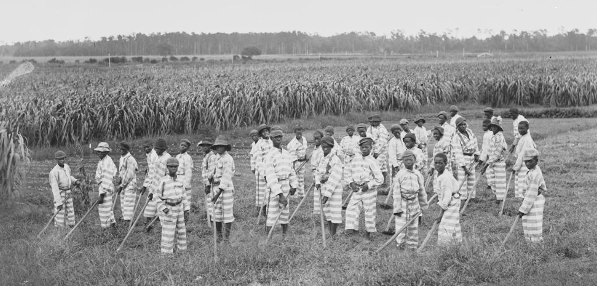

The Prison and the Economy
The incarcerated people of Attica understood their confinement as inseparable from their economic position. The overwhelming majority was made up of “men of color” who came from “poor urban communities” that had been systematically excluded from economic opportunity through housing discrimination, labor market segmentation, educational disinvestment, and the targeted policing of poverty. This prison is an example of how the modern incarceral system is devised to punish and “absorb” those who are poor and working class to remove them from society.
Not only was the prison primarily made up of working class poor men of color, but the prison itself was tied to economics as the prison functioned as an economic institution which gives money to the state. In 2025, California prisons were “allocated $13.6 billion in 25-26”, which all goes towards funding guards, transportation, food services, electrical bills, and other expenses that grow the local economy and create taxes that go back to the state from those who receive payment from these systems. Within the prison, texts related to Marxism and radical movements inspired the prisoners as “a group of five incarcerated men had spent the previous summer reading revolutionary texts by Karl Marx, Vladimir Lenin, Leon Trotsky, Malcolm X, W.E.B. Du Bois, and Frederick Douglass”. Part of these texts included the hierarchy of class, race and social standing in regards to economics and allowed the prisoners to realize the treatment they received in connection to these factors.
Prison Labor and Exploitation
One of the most concrete economic grievances at Attica concerned prison labor. Incarcerated people were required to work in prison industries, laundry, kitchens, and maintenance operations for “wages” that could be deemed slave labor for their insignificance. It is said that “at the time of the uprising, most prisoners earned only 6–29 cents a day for their labor, while the prison made $1.2 million in sales” from the products that the prisoners created. This labor produced value for the state and for private contractors while returning virtually nothing to the workers themselves or their families.
The prisoners' demands addressed labor conditions directly, calling for fair wages, the application of state minimum-wage laws to prison labor, and an end to the exploitation of incarcerated workers. These demands connected the prison to a longer history of coerced labor in the United States following the abolishment of slavery, where the 13th Amendment “Explicitly exempted those convicted of a crime”. Since the Amendment, black men have been targeted systematically through convict leasing which falsely imprisoned and targeted this group to exploit them for free labor, and in Attica and other prisoners across America; through the rising disproportionate mass incarceration of black men since the Civil Rights movement.

The Thirteenth Amendment to the U.S. Constitution abolished slavery and involuntary servitude "except as a punishment for crime." The prisoners at Attica understood that exception as the foundation of a system that had never fully ended.
Class, Community, and Confinement
The labeling of prisoners and lower class black men as subordinates in Attica who must be contained extended beyond the prison walls. Prisoners recognized that their communities of origin were themselves carceral spaces in important respects. Neighborhoods characterized by concentrated poverty, surveillance, police occupation, and the withdrawal of public services. The prison was the end point of a pipeline that began with disinvestment and exclusion and confinement did not begin at the prison gate; it began with the economic conditions that made certain communities disposable in the eyes of the state. We can see that this was an early case of frustration from this pipeline as “the prison population grew by 700% between 1972 and 200”. Unfortunately for Attica's prisoners, their riot did not change this system or put an end to it, but instead just became another story derived from these conditions.
The prison and the ghetto are connected institutions in a single system of racialized economic control that fuel mass incarceration through the “ghetto to imprisonment pipeline”. Michelle Alexander refers to this in her book The New Jim Crow where the idea of “the cage” is outlined as a framework for children of the ghetto, in which “they are caged off and cut off from education and socioeconomic opportunities”. Given that these exact factors strongly correlate to imprisonment when deficient, we see why the ghetto often produces people who become involved in the criminal system. The people of Attica did not need academic frameworks to arrive at this analysis though. Many of them had lived in the Ghetto prior to the imprisonment, and then faced the conditions of the prison itself which further “caged” them off from society.
The Economics of the Retaking
The economic dimensions of the Attica crisis extended to the state's response itself. The decision by Rockefeller to "violently to retake the prison by force rather than continue negotiations reflected a calculation about the costs of agreement. Granting prisoners' demands of fair wages, improved conditions, and pardons would have required ongoing expenditure and would have set precedents that other incarcerated populations could follow suit in. While the assault took many lives unjustifiably, it was cheaper than structural change.
The legal aftermath further illustrates the economic logic of the carceral state. The $12 million settlement reached in 2000 for former inmates and families, and the $12 million settlement in 2005 for surviving hostages, represented the state's preferred mode of accountability; monetary payments that acknowledged harm without requiring systemic reform. The settlements were significant for the individuals involved, but they did not alter the economic structures that produced Attica in the first place. Not only this, but this is nothing compared to the billions invested each year into the American prison system each year. In the end, this was an insignificant price to pay to preserve this system which has generated exponentially more than this settlement invoked.
Class Solidarity Across the Walls
The hostage employees killed during the retaking were themselves working-class people. Many of the corrections officers at Attica came from the same rural communities in western New York that depended on the prison “as one of the few sources of stable employment”. The prison created an economic relationship of working-class white communities guarding working-class Black and Brown communities, both trapped in an institution that served the interests of neither. Despite the community's thoughts on the system, they were intertwined by the system and forced into it in order to feed their families, perpetuating it and deepening its roots.
The prisoners' organizing acknowledged this dynamic and called for better educational programs and reform to the system itself. They were aware that to end this system there needed to be better resources to prevent them from ending up in this system, and for exit opportunities when released. The acknowledged how the governor wouldn't even meet with them showing again a class difference as the working class white guards were the ones to deal with the mess while higher class officials stayed away, perpetuating the system afar from an economic standpoint out of sight. The tragedy of Attica is partly a tragedy of class where working people on both sides of the bars were sacrificed to a system that exploited them both, while the political leaders who made the decisions that led to the massacre faced no personal consequences.